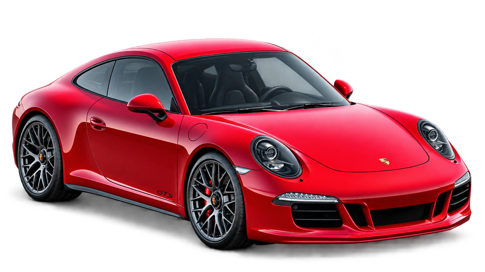
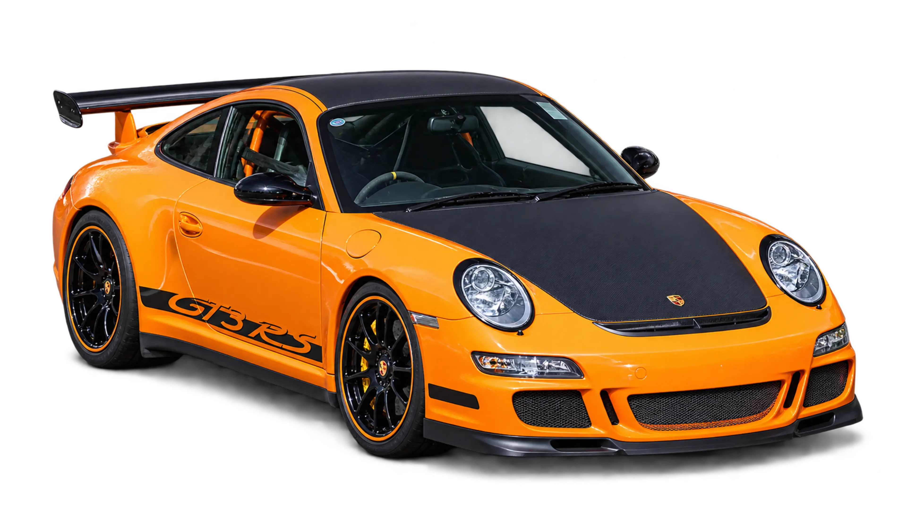
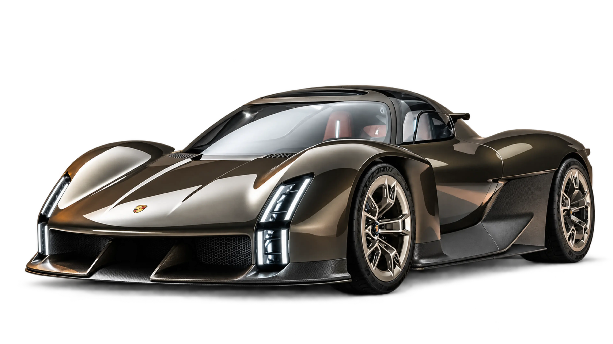
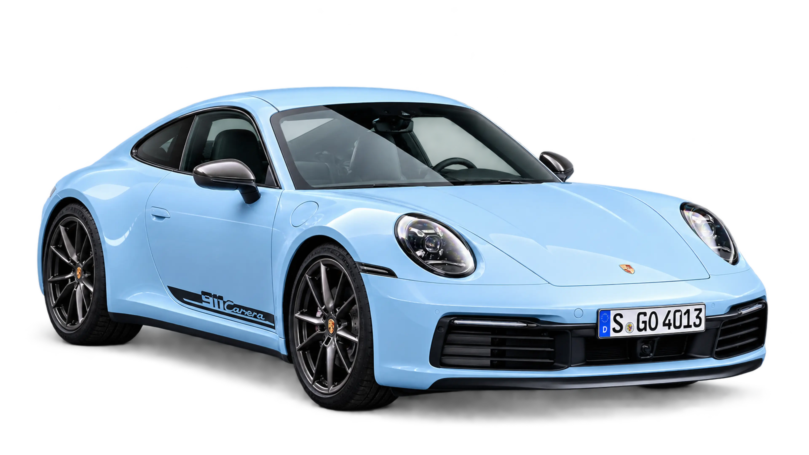
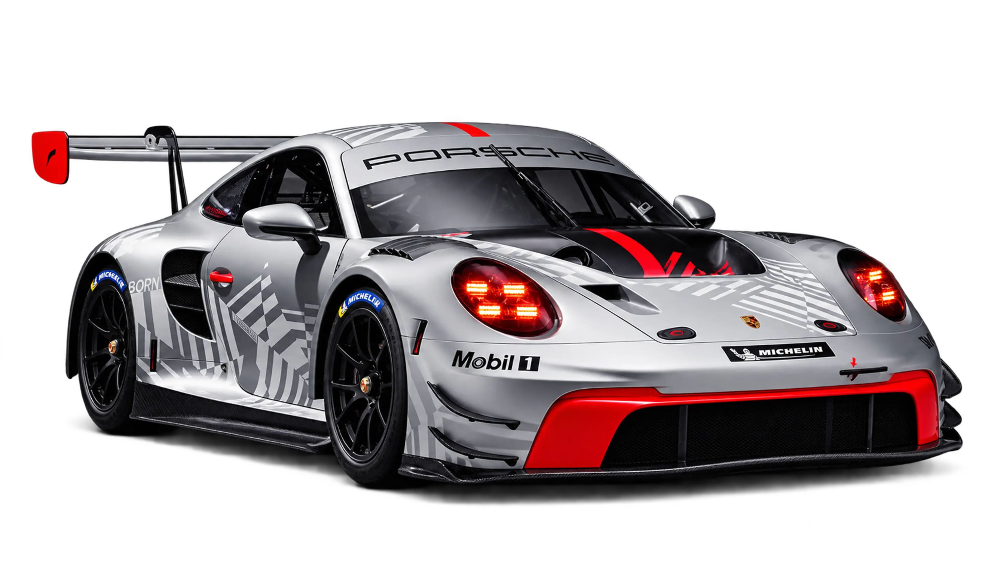

Detail lampu menjadi identitas visual sekaligus garis pembuka kendaraan.

NITROVA / 01PORSCHE
911 CARRERA GTS
911 CARRERA GTS
0110
SCROLL TO DRIVE THE STORY
02 / PERFORMANCEBUILT
BUILT
FOR VELOCITY.
06PORSCHE MODELS
15CURATED CARS
03PERFORMANCE MARQUES

03 / IN MOTIONPRECISION
PRECISION
AT SPEED.
Lapisan visual bergerak dengan ritme berbeda untuk menciptakan kedalaman sinematik.
04 / DESIGNSCULPTED
SCULPTED
BY AIR.
Bentuk, cahaya, dan aerodinamika dibaca sebagai satu garis yang terus bergerak.

01 / FRONT ARCHITECTUREPermukaan yang bersih mengarahkan aliran udara tanpa mengganggu proporsi.
Setiap elemen disusun untuk membuat mobil terasa siap bergerak.

05 / STUDIO AMBIENCE
SET THE TONE.
Warna mengubah lingkungan studio; warna asli mobil tetap dipertahankan.
06 / ENGINEERINGPRECISION
PRECISION
WITHOUT
COMPROMISE.
Aerodynamics
Active surfaces and a purposeful silhouette support stability at speed.
Powertrain
Immediate response and measured control shape every acceleration.
Chassis
Balance connects steering input, road surface, and driver confidence.
Braking
Consistent stopping performance completes the performance system.
07 / ITALIAN PERFORMANCE · LAMBORGHINIFORM MEETS
FORM MEETS
VELOCITY.
08 / EDITORIAL GALLERY
Closer to the craft.
Scroll untuk bergerak dari satu detail ke detail berikutnya. Setiap sorotan tetap dapat dipilih langsung.

01 / 04FRONT QUARTER
06PORSCHE PILIHAN01STUDIO INTERAKTIF∞RASA INGIN MENJELAJAH
Setiap lekuk punya cerita.
Temukan sudut favoritmu.
01 / HIGHLIGHTS
Icons in motion.
Lihat semua mobilTiga karakter berbeda. Satu obsesi yang sama: mengemudi.
09 / PORSCHE PERFORMANCE
Porsche in focus.
Lihat galeri ↗Enam karakter Porsche disajikan sebagai objek editorial beresolusi tinggi—bersih, proporsional, dan tetap setia pada visual aslinya.
03 / INTERACTIVE STUDIO
Closer to the drive.
Geser mobil, perbesar detail, dan ganti model. Gambar studio dari koleksi asli.
01 / 15
HERITAGE / TRACK
911 GT3 RS
CONTROL YOUR VIEW
Pilih sudut pandangmu.
Gambar mobil tetap utuh dan jelas. Sentuh atau seret untuk menggeser, gunakan kontrol untuk memperbesar.
04 / THE COLLECTION
The performance edit.
Porsche, Koenigsegg, dan BMW. Setiap foto menampilkan mobil yang sesuai dengan namanya.
05 / SWEDISH HYPERCARS
Koenigsegg collection.
Filter katalog ↗Empat perspektif dari koleksi gambar yang Anda berikan.
06 / M PERFORMANCE
BMW collection.
Filter katalog ↗Coupe, sedan, listrik, dan motorsport dalam satu koleksi.
BMW / NIGHT RUNPrecision in motion.
Visual bergerak dipadukan dengan katalog untuk menghadirkan atmosfer performa tanpa mengganggu navigasi.
07 / PERFORMANCE GARAGE
Beyond limits.
Jelajahi pilihan performa dari setiap merek.
08 / NEW ARRIVALS
Fresh in focus.
ABOUT NITROVA
More than speed.
A feeling.
NITROVA adalah ruang digital untuk menikmati desain dan karakter Porsche, Koenigsegg, dan BMW. Buka koleksi, cari model yang kamu suka, lalu jelajahi tampilannya di studio interaktif.
Jelajahi studioTHE FINAL FRAMEENGINEERED
ENGINEERED
TO MOVE YOU.
Experience Performance Beyond Limits.